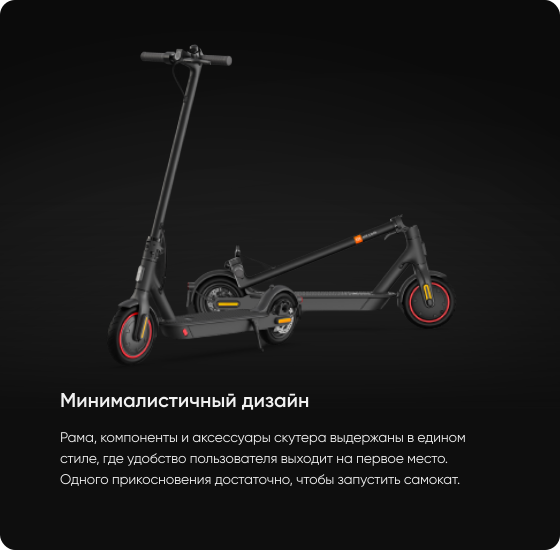
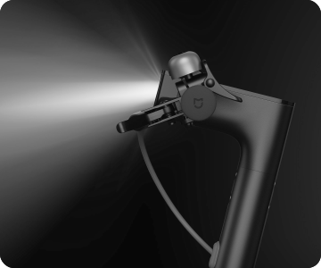
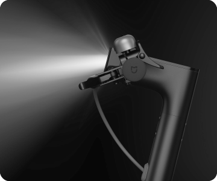

Лаконичный современный дизайн,
в котором нет ничего лишнего
в котором нет ничего лишнего

Удобная панель управления
Удобно расположенные элементы управления. Отображение
8 типов данных в реальном времени: скорость, режим, заряд
аккумулятора, состояние блокировки и другая информация.
8 типов данных в реальном времени: скорость, режим, заряд
аккумулятора, состояние блокировки и другая информация.
Заботится о вашей безопасности
Яркие ходовые
огни
огни
Продуманный угол рассеивания света
позволяет сохранять хорошую
видимость, не ослепляя других
участников движения.
позволяет сохранять хорошую
видимость, не ослепляя других
участников движения.
Двойная тормозная
система
система
При нажатии наручку тормоза
системы переднего и заднего колеса
активируются последовательно,
сокращая тормозной путь и
обеспечивая безопасную и плавную
остановку.
системы переднего и заднего колеса
активируются последовательно,
сокращая тормозной путь и
обеспечивая безопасную и плавную
остановку.
Яркая задняя
фара
фара
При включении ходовых огней задняя
фара включается автоматически.
При нажатии на ручку тормоза она
начинает мигать, предупреждая других
участников движения.
фара включается автоматически.
При нажатии на ручку тормоза она
начинает мигать, предупреждая других
участников движения.
Отражатели спереди,
сбоку и сзади
сбоку и сзади
Улучшенные отражатели,
размещенные с четырех сторон,
делают вашу поездку
в темное время суток безопаснее. br
размещенные с четырех сторон,
делают вашу поездку
в темное время суток безопаснее. br
 

Мобильное приложение
Mi Home
Подключите самокат к мобильному приложению
Mi Home и используйте его для блокировки
и разблокировки самоката, а так же просмотра
основных данных: пробег,скорость,
уровень заряда аккумулятора.